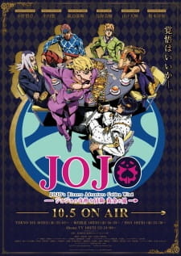

Тип: TV Сериал
Эпизоды: 39
Длительность эпизода: 24 мин.
Дата выпуска: 2018-2019 г.г.
Жанры: Экшен Приключения Сверхъестественное Драма Сёнен
Рейтинг: R-17
Лицензировано: Crunchyroll
Лицензировано в РФ под названием: Невероятные приключения Джоджо: Золотой ветер
По-японски: ジョジョの奇妙な冒険 黄金の風
По-английски: JoJo's Bizarre Adventure: Golden Wind

Золотой ветер/Golden Wind
Информация
Описание
События новой части «Невероятных приключений ДжоДжо» развернутся в Италии 2001 года.
Джорно Джованна — молодой амбициозный парень, живущий в школе-интернате и промышляющий мелким мошенничеством. Юноша, будучи сыном Дио Брандо, вобрал в себя как хладнокровие отца, так и пылкое, переполненное решимостью сердце Джостаров.
Джорно решает вступить в мафиозную семью «Пассионе», как только встречает её члена — Бруно Буччеллати, чтобы пробиться в ней к вершине власти. В составе команды Буччеллати новоиспечённому гангстеру предстоит найти выход из самых неординарных ситуаций, выполняя крайне ответственное поручение лично от босса семьи. Множество опасных обладателей стендов станут препятствием на пути команды к успеху и героя к исполнению его «золотой» мечты — возглавить мафиозную группировку и ограничить её преступную деятельность.
Джорно Джованна — молодой амбициозный парень, живущий в школе-интернате и промышляющий мелким мошенничеством. Юноша, будучи сыном Дио Брандо, вобрал в себя как хладнокровие отца, так и пылкое, переполненное решимостью сердце Джостаров.
Джорно решает вступить в мафиозную семью «Пассионе», как только встречает её члена — Бруно Буччеллати, чтобы пробиться в ней к вершине власти. В составе команды Буччеллати новоиспечённому гангстеру предстоит найти выход из самых неординарных ситуаций, выполняя крайне ответственное поручение лично от босса семьи. Множество опасных обладателей стендов станут препятствием на пути команды к успеху и героя к исполнению его «золотой» мечты — возглавить мафиозную группировку и ограничить её преступную деятельность.
Персонажи
Манга
Саундтрек
Смотреть